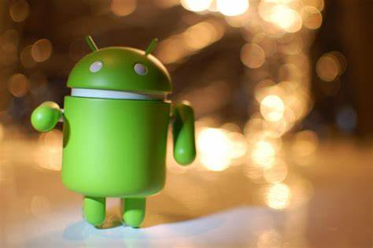
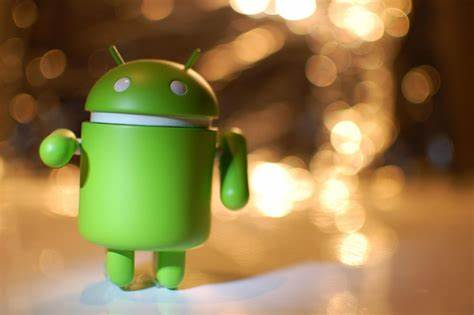

historia da tecnologia
O Android é um sistema operacional móvel desenvolvido pela Google. A história do Android remonta a 2003, quando a empresa Android Inc. foi fundada por Andy Rubin, Rich Miner, Nick Sears e Chris White. O objetivo inicial era desenvolver um sistema operacional para câmeras digitais, mas eles logo perceberam o potencial de expansão para dispositivos móveis.
quando foi adquirida pelo Google
Em 2005, a Google adquiriu a Android Inc. e começou a trabalhar no desenvolvimento do sistema operacional Android. A primeira versão do Android foi lançada em 2008, chamada de Android 1.0. Desde então, o Android tem passado por várias atualizações e melhorias.
.jpg)
.jpg) 
O Android se tornou extremamente popular devido à sua natureza de código aberto, o que significa que qualquer pessoa pode contribuir para o seu desenvolvimento e criar aplicativos para ele. Isso levou a um grande número de aplicativos disponíveis na loja oficial do Android, a Google Play Store.
Com o tempo, o Android se expandiu para além de smartphones e tablets, sendo usado em uma variedade de dispositivos, como smartwatches, TVs, carros e dispositivos domésticos inteligentes. O Android também se tornou o sistema operacional móvel mais usado no mundo, superando outros concorrentes.
O Android continua a evoluir e se aprimorar, com novas versões sendo lançadas periodicamente. Ele oferece aos usuários uma experiência de usuário intuitiva, recursos avançados e uma ampla gama de opções de personalização. O sistema operacional Android continua sendo uma escolha popular para muitas pessoas em todo o mundo.
A tecnologia do Android é baseada em um sistema operacional de código aberto desenvolvido pela Google. Nesse sistema, a interface do usuário é construída utilizando uma linguagem chamada XML (Extensible Markup Language), que define a estrutura e o design da interface gráfica.

O Android se tornou extremamente popular devido à sua natureza de código aberto, o que significa que qualquer pessoa pode contribuir para o seu desenvolvimento e criar aplicativos para ele. Isso levou a um grande número de aplicativos disponíveis na loja oficial do Android, a Google Play Store.
Com o tempo, o Android se expandiu para além de smartphones e tablets, sendo usado em uma variedade de dispositivos, como smartwatches, TVs, carros e dispositivos domésticos inteligentes. O Android também se tornou o sistema operacional móvel mais usado no mundo, superando outros concorrentes.
O Android continua a evoluir e se aprimorar, com novas versões sendo lançadas periodicamente. Ele oferece aos usuários uma experiência de usuário intuitiva, recursos avançados e uma ampla gama de opções de personalização. O sistema operacional Android continua sendo uma escolha popular para muitas pessoas em todo o mundo.
A tecnologia do Android é baseada em um sistema operacional de código aberto desenvolvido pela Google. Nesse sistema, a interface do usuário é construída utilizando uma linguagem chamada XML (Extensible Markup Language), que define a estrutura e o design da interface gráfica.